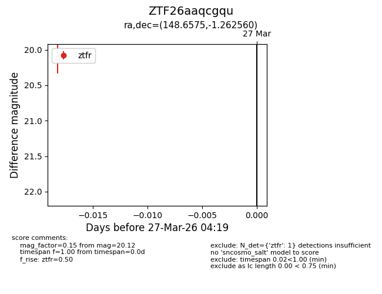
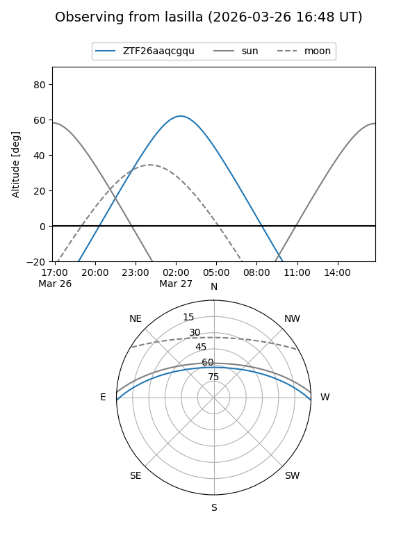
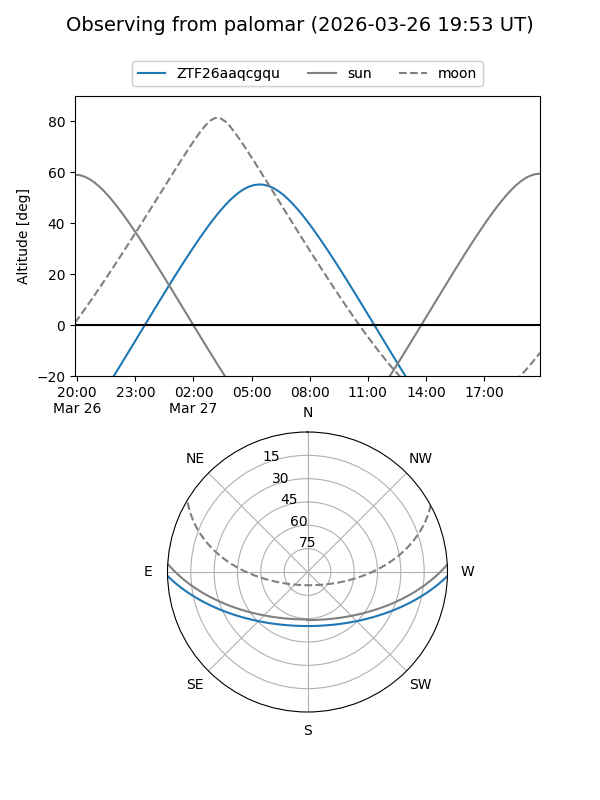

ZTF26aaqcgqu
Target ZTF26aaqcgqu at 2026-03-27 04:22
Aliases and brokers:
FINK: link
Lasair: link
ALeRCE: link
alt names
ZTF26aaqcgqu (ztf,fink_ztf)
Coordinates:
equatorial (ra, dec) = 148.6575,-1.26256
equatorial (HMS+DMS) = 09:54:37.80,-01:15:45.22
galactic (l, b) = (239.3593,+38.88934)
Flags:
Photometry:
last ztfr=20.12
1 ztfr detections
Lightcurve

Visibility


Additional plots